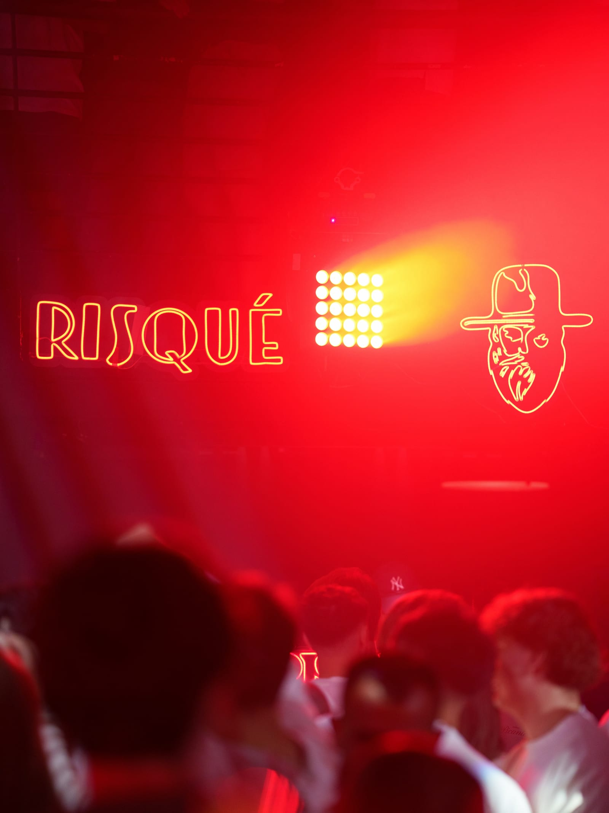
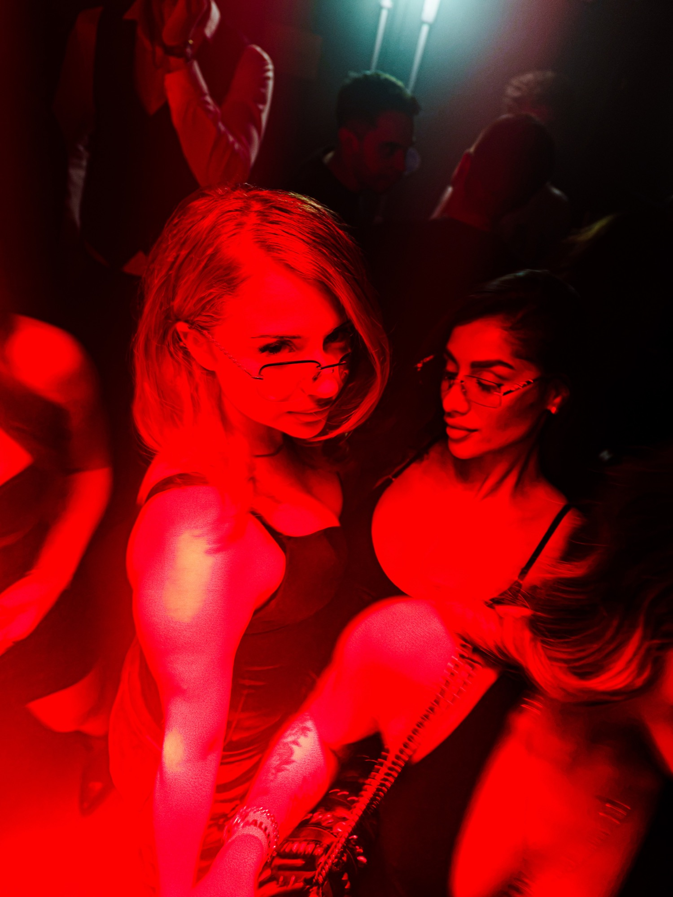

Arrivals at Irmão
Filming
People finding their spot in the dunes, the first beach sets, sunset over the main stage, the first night at Praia da Sereia.
Goes out
Day one recap reel, on your Instagram the next afternoon.
For Nick and the SuncéBeat team
17 to 21 June, Costa da Caparica. From the first set at Irmão to the last boat back to Trafaria. I'd be there the whole time, filming it myself.
What I'd film each day, and what goes out while it's still happening.
Filming
People finding their spot in the dunes, the first beach sets, sunset over the main stage, the first night at Praia da Sereia.
Goes out
Day one recap reel, on your Instagram the next afternoon.
Filming
A boat party out of Trafaria, then the two rooms at the afterparty until 6am. One artist followed from arrival to the decks.
Goes out
Day two recap reel and the first artist reel.
Filming
Yoga and dance classes, the deck and the restaurant, the Soulbase room, then the peak night. Full sets recorded if you want them.
Goes out
Day three recap reel.
Filming
The last day at Irmão, the second artist reel, the closing sets and sunrise at the afterparty. Drone over the dunes where it's allowed.
Goes out
Day four recap reel.
Delivered
200+ edited photos by 26 June. The aftermovie, 60 to 90 seconds in 16:9 and 9:16, by 1 July. 8 vertical reels for Instagram and TikTok.
Why the timing matters
Your 2026 aftermovie went up on 9 July, a day before the general sale. This way the 2028 early birds open with the aftermovie and four recaps already out.
This is the full-festival plan. With two days, you pick the two that matter most.
My own work, closest to what you'd get. Tap a clip for sound.
Nico Ramírez at Ministry of Sound. You'd get two of these, with artists from your line-up.
The whole Ministry of Sound nightTransylvania Sunset, an hour-long open-air set I produced in Cluj. For SuncéBeat the audio comes straight from the mixer.
Watch it on my siteThis summer I spent seven weeks filming trips of around 200 people across the US West Coast: boat days, road trips, a party on the 70th floor in Las Vegas. Close to what a SuncéBeat week is.
More from the tour



I'd land on Wednesday 16 June, walk Irmão and Praia da Sereia with your team, and agree which artists and moments matter most. During the festival I edit at night and send each recap to you before it's posted, so you approve everything.
You get full rights to use everything on your own channels. Payment is 50% to confirm the booking and 50% on delivery, with one round of changes included.
I've brought the full festival down from €2,800 in my first quote to €2,500, because I'd really like to work with you on this one. On top of either: a return flight and a room for the days I'm filming.
Full festival
€2,800€2,500
Two days of your choice
€1,700
Full-length DJ set recordings, audio from the mixer: €200 per set.
The same setup works in the UK. If you'd like both events on one booking, I'll put together a combined price.
Happy to change the plan around what you need, or talk it through on a short call.
Stefan Horus, videographer from Cluj, Romania. I run Zoomout_crew and film electronic music events, artists and brands, in London, across the US and at home. I film on my own and edit everything to the music.
Portfolio